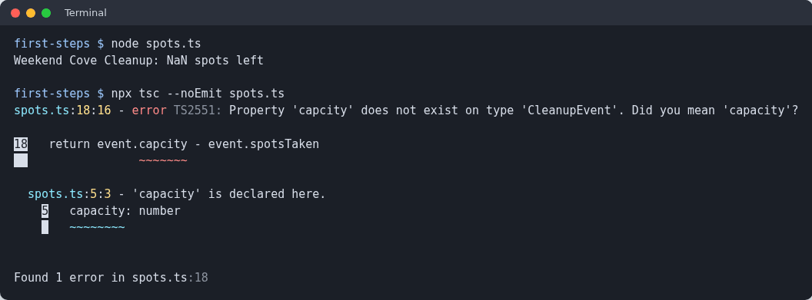
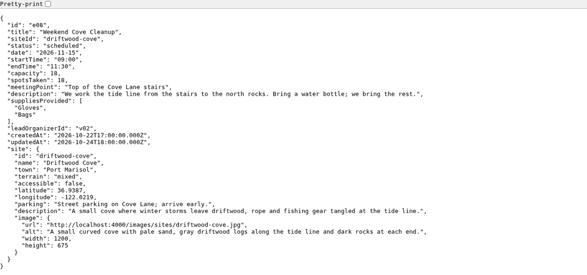
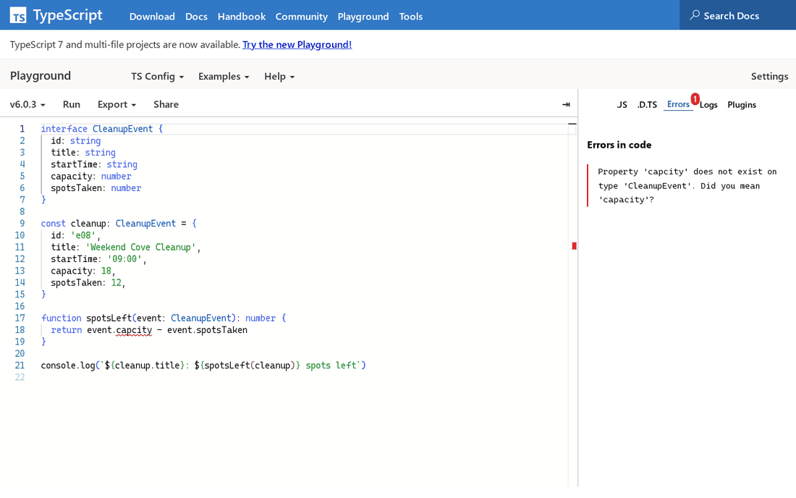

🔷 Lesson 1.1: Why React + TypeScript
Every Saturday morning, somewhere on a coast, a few dozen volunteers meet at a beach with gloves and bags and leave it cleaner than they found it. The people who organize them need software: who signed up, which cleanup is full, how much trash came off the sand this year. In this course you build that software, and you build it the way professional teams build web apps today, with React for the screens and TypeScript checking every piece of data that flows through them. This first lesson gives you the map: what each tool does, why they belong together, what TypeScript cannot do for you, and the app you will build. Then you write your first types and watch TypeScript catch a bug that plain JavaScript lets through without a word.
🎯 Learning Objectives
By the end of this lesson, you will be able to:
- Explain in your own words what React does and what TypeScript does, and why teams use them together
- Describe when TypeScript's checks happen (while you write and build) and what they cannot catch (data that arrives while the app runs)
- Read a TypeScript error message and find the line, the cause and the suggested fix
- Write an
interfacefor a piece of real API data and use it to type a function - Connect the screens of Shoreline Crew HQ to the API data each one needs
In This Lesson
👋 Welcome: Two Tools, One Habit
React and TypeScript solve different problems. React is about what the user sees: it turns your data into screens and keeps them up to date when the data changes. TypeScript is about what your code assumes: it lets you write down the shape of your data once and then checks, everywhere, that the code treats the data the way you said it would. Used together, they build a habit that experienced developers rely on every day: describe the data first, then let the tools hold you to it.
It is a combination worth learning well:
- For your career: React is one of the most requested front-end skills in job listings, and in new projects it is very often listed together with TypeScript. Knowing both, and knowing how they fit, is what "React developer" usually means now.
- For the people you build for: many of the bugs users meet (a blank screen, "undefined" in a heading, a price that shows
NaN) are exactly the kind TypeScript reports before the code ever ships. - For the long run: the same skills carry over to React Native, to frameworks such as Next.js, and to Node.js on the server. The React Native course on this site starts where this one ends and builds a phone app for the same project.
✅ You are in the right place
This course assumes you know JavaScript and nothing about TypeScript or React. Module 2 teaches the TypeScript you need before React appears, and every later lesson keeps teaching TypeScript inside real React code. If you have tried either one before and felt buried in new words, that is normal: each word makes sense once you have used it on something real, and that is how this course works.
⚛️ What React Does
Without React, keeping a page in step with your data is your job. When a volunteer signs up for a cleanup, plain JavaScript has to find the right elements in the page and change them one by one: the "spots left" number, the button that should now say "Join the waiting list", the count in the header. Miss one and the page shows something that is no longer true.
React turns that around. You write components: functions that say what a part of the screen should look like for the data they are given. When the data changes, React works out what changed on the screen and updates it for you. Here is the kind of component you will write by Module 3 (you do not need to understand every symbol yet):
interface CleanupCardProps {
title: string
spotsLeft: number
}
export function CleanupCard({ title, spotsLeft }: CleanupCardProps) {
return (
<article>
<h2>{title}</h2>
<p>{spotsLeft === 0 ? 'Full: join the waiting list' : `${spotsLeft} spots left`}</p>
</article>
)
}Read it out loud and it is almost a sentence: "a cleanup card is an article with the title as a heading, and either 'Full' or the number of spots left". The HTML-like part is TSX (TypeScript with JSX), which becomes ordinary JavaScript when the app is built. You never tell React how to change the page; you describe what it should be, and React does the rest. That style is called declarative.
💡 Mental model: the tide chart and the beach
Think of React as a tide chart that redraws itself. You do not repaint the water line every hour; you keep the data (the times and heights) correct, and the chart is drawn from it. In React, your job is to keep the data right; drawing the screen from it is React's job.
🔷 What TypeScript Does
TypeScript is JavaScript with one addition: types, short descriptions of what a value is allowed to be. TypeScript's syntax is JavaScript's syntax with types added (TypeScript is a superset of JavaScript), so you are not learning a new language from scratch; you are learning to annotate the one you know. Here is a small script for a Shoreline Crew cleanup, with a typo in it. Look closely at the line inside spotsLeft:
interface CleanupEvent {
id: string
title: string
startTime: string
capacity: number
spotsTaken: number
}
const cleanup: CleanupEvent = {
id: 'e08',
title: 'Weekend Cove Cleanup',
startTime: '09:00',
capacity: 18,
spotsTaken: 12,
}
function spotsLeft(event: CleanupEvent): number {
return event.capcity - event.spotsTaken
}
console.log(`${cleanup.title}: ${spotsLeft(cleanup)} spots left`)The first seven lines are new: an interface that says what a cleanup looks like (an id that is a string, a capacity that is a number, and so on). The rest is ordinary JavaScript plus three annotations: : CleanupEvent after the variable, event: CleanupEvent on the parameter and : number for what the function returns.
Now watch the same file handled two ways. First, run it with Node.js, which since version 24 can run a .ts file directly by deleting the types and running what is left. Then hand it to the TypeScript compiler, tsc, which reads the types and checks them:
node spots.ts
npx tsc --noEmit spots.ts
NaN; the TypeScript compiler refuses it and names the typo, the line and the fix.Expected output
Weekend Cove Cleanup: NaN spots leftExpected output (npx tsc --noEmit spots.ts)
spots.ts:18:16 - error TS2551: Property 'capcity' does not exist on type 'CleanupEvent'. Did you mean 'capacity'?
18 return event.capcity - event.spotsTaken
~~~~~~~
spots.ts:5:3 - 'capacity' is declared here.
5 capacity: number
~~~~~~~~
Found 1 error in spots.ts:18Plain JavaScript (and Node, which only strips the types) does exactly what the code says: event.capcity does not exist, so it is undefined, and undefined - 12 is NaN. No error, no warning, just a wrong number on a screen. TypeScript reads the same line, knows from the interface that a CleanupEvent has no capcity, and says so, with the line, the column, the cause and a suggestion. The --noEmit flag means "only check, do not write any JavaScript files"; it is how the course's projects use tsc, because Vite produces the JavaScript.
Three facts to keep from this experiment:
- TypeScript checks before the code runs. This is called static type checking. In your editor it happens as you type, as a red underline; in a terminal it happens when you run
tsc(in this course, every build runs it). - The types disappear. Browsers and Node run plain JavaScript. Types exist to be checked, then they are removed. That also means they cost nothing in the finished app.
- Running is not checking. Node 24 and Vite both run TypeScript files without checking them. If you never run
tsc(or never look at your editor's errors), you get none of TypeScript's protection.
💡 Mental model: the spell-checker for your data
A spell-checker does not write your sentences, and it does not stop you from printing a letter full of typos. It underlines the words that do not match the dictionary, while you type, so you can fix them before anyone reads them. TypeScript is a spell-checker whose dictionary is your own descriptions of your data. The better your descriptions, the more it can catch.
🤝 Why They Belong Together
A React app is a tree of components passing data to each other, and most of that data comes from somewhere else: an API, a form, the address bar. Every hand-off is a place where one part of the code can assume something another part does not provide. TypeScript turns those assumptions into checked agreements:
- Props become contracts. The
CleanupCardabove says it needs atitle(string) andspotsLeft(number). Use it withspotsLeft="6"(a string) or forget the title, and the error appears where you used it, not as a strange screen later. - API data gets a shape. Once you describe what the API sends, your editor autocompletes every field and flags every misspelled one.
- Changes become safe. Rename a field or add a required prop, and the compiler lists every place that needs updating. On a team, this is the difference between a confident change and a nervous one.
- Your editor becomes a guide. Hover over anything to see its type; type a dot to see what is available. Much of what you would look up in documentation appears right where you are typing.
Here is where TypeScript sits in a React project like the one you will build. While you type, your editor runs the same checks and underlines problems; when you build, tsc checks every file and stops the build if anything is wrong, and Vite turns the files into JavaScript. The browser only ever receives the JavaScript:
| Mistake | Plain JavaScript | TypeScript |
|---|---|---|
Misspelled property (capcity) | undefined, then NaN on screen | error before it runs, with "Did you mean 'capacity'?" |
A string where a number belongs ('18') | works, or concatenates ('18' + 2 is '182') | error: Type 'string' is not assignable to type 'number' |
| A required value left out | undefined somewhere later | error: Property 'spotsTaken' is missing |
| A component used with the wrong props | a broken or empty part of the screen | error at the line that uses it |
| The API sends something unexpected | breaks while running | also breaks while running, unless you check the data (next section) |
🚧 What TypeScript Cannot Do
Knowing the limits is what separates people who trust TypeScript wisely from people who are surprised by it:
- It cannot see data that arrives while the app runs. When your app asks the API for a cleanup, TypeScript has no idea what will come back; it believes whatever type you say the answer has. If the server sends something else, the types were wrong and nothing warned you. Lesson 2.4 shows how to treat incoming data as
unknownuntil it is checked, and Module 8 uses Zod to check it with the same schema that defines the type. - It cannot check logic.
capacity - spotsTakenandcapacity + spotsTakenare both perfectly typed numbers. Only tests (Module 9) and you can tell which one is right. - It can be switched off. The type
anymeans "stop checking this value", and it spreads: anything you get from ananyis unchecked too. The course usesunknowninstead and shows you how to narrow it. - It does not make code faster or slower. The types are removed before the code runs.
⚠️ A green build is not a working app
"It compiles" means your code agrees with your types. It does not mean the types match the real world, or that the app does what users need. That is why this course pairs types with runtime checks for incoming data, tests for behavior, and a browser check of every lesson's result.
🌊 The Course Project: Shoreline Crew HQ
Shoreline Crew is a (fictional) volunteer group that cleans up six beaches along its stretch of coast: sandy beaches, a rocky jetty, a tidal marsh and a creek mouth. Three organizers plan the cleanups; about two dozen volunteers sign up for them. You build the organizers' app, Shoreline Crew HQ, one lesson at a time:
- Cleanups: a list you can search and filter, a page for each cleanup, and forms to plan and edit them
- Volunteers: who signed up, a waiting list when a cleanup is full, and check-in on the day
- Sign-in with roles: organizers can change things; volunteers can only see what is theirs
- Impact: a dashboard of what the crew collected (weight, bags, the most common kinds of trash), impact reports with photos, and a CSV export for the group's grant reports
The app talks to the Shoreline Crew API (shoreline-api), a small back end the course gives you. It runs on your own computer with one command, needs no account and no installation, and comes with realistic sample data placed around today's date, so there is always a cleanup happening today, some coming up and some already done. It behaves like a real API: it pages long lists, rejects bad input with a message for each field, requires sign-in for some actions and can be told to answer slowly or fail, so you can practice loading and error screens. Here is what it sends for one cleanup:

Notice that the answer already looks like the CleanupEvent interface from the script above, with more fields: a status that is always one of four words, a date, a list of suppliesProvided, and the site it takes place at. In Lesson 2.4 you describe all of it in TypeScript; the API even ships its own type definitions, so your app and the API agree on every field.
The same API serves a second app later: in the React Native course you build the volunteers' phone app (browse cleanups, sign up, check in on the beach, log what you collected even without a signal, attach photos). Both apps share the API and its types:
💡 Why a mock API and not a real database?
Front-end developers often build against a stand-in back end while the real one is being written, or test against one so tests do not depend on a server. Using one here keeps the course about React and TypeScript, keeps everything free and local, and lets the same data appear in your app, your tests and the React Native course. Its sample people and email addresses are fictional (example.com).
🌱 How to Learn in This Course
Learning two tools at once can feel like a lot. A few ideas will make it much easier:
- Red underlines are feedback, not failure. You are about to see a lot of TypeScript errors. Each one is the compiler telling you something it noticed, usually with a suggestion. Professionals see them all day; the skill is reading them calmly, top to bottom, and you will practice that in every lesson.
- Add the word "yet". "I don't understand generics" becomes "I don't understand generics yet". The course introduces each idea when you need it and comes back to it later; the second time is when most things click.
- Plateaus are normal. There will be lessons where nothing seems to stick and lessons where everything falls into place. Both are part of learning a craft. This is a marathon, not a sprint: steady practice beats long cramming sessions.
- Type the code. Copying is fine for setup files; for everything you are learning, typing it yourself (and making typos the compiler catches) is how your hands learn what your eyes read.
How each lesson works:
- Every lesson adds to the same app. Each one with code has a 📦 download of its starting and finished code, so if you fall behind or something will not work, you can compare your files or start from a known-good copy.
- Every code sample in the lessons was run on the course's stack and checked against those downloads. When a lesson shows terminal output, it is what a real terminal printed.
- Every lesson ends with a project step, optional exercises, a five-question quiz and a journal prompt. The journal is not decoration: writing down what you learned is one of the most reliable ways to remember it.
⚠️ Common Mistakes
⚠️ Believing TypeScript checks the running app
TypeScript checks your code, before it runs. If the API answers with something your types did not expect, nothing stops it. Treat outside data as unchecked until you check it (Lesson 2.4).
⚠️ Making errors go away with any
Writing : any silences the compiler the way taking the batteries out silences a smoke alarm. When an error is confusing, read it from the top, look at the line it names, and ask what TypeScript knows about that value. The course shows a better fix for every situation where any is tempting.
⚠️ Running TypeScript and assuming it was checked
node file.ts and the Vite dev server both run TypeScript without checking it, as you saw with NaN. Keep your editor's error list in view and let npm run build (which runs tsc) be your final word.
⚠️ Reading only the last line of an error
TypeScript's most useful words are often at the start (the file, line and error code) and in the follow-up lines ("'capacity' is declared here", "The expected type comes from…"). Read the whole message once before changing anything.
🛠️ Project: Your First Types
You will write the cleanup script from this lesson in the TypeScript Playground, break it on purpose three ways and read each error like a developer, run it, and finish by mapping the screens of Shoreline Crew HQ to the data they need. Everything happens in your browser.
Step 1: Open the TypeScript Playground (5 min)
- Open the TypeScript Playground. It is the official online editor from the TypeScript team: your code on the left, and on the right the JavaScript it becomes, the errors and the output.
- Select everything in the editor (Ctrl+A, or ⌘ Cmd+A on a Mac) and delete it.
💡 Which version?
The version menu at the top left of the editor may show an older TypeScript (at the time of writing, 6.0) than the one the course uses (7.0). Everything in this lesson behaves the same in both. A newer Playground with TypeScript 7 is linked at the top of the page; you can use either.
Step 2: Type the cleanup (15 min)
- Type this into the editor (type it rather than paste it: you will see the editor suggest names as you go):
interface CleanupEvent {
id: string
title: string
startTime: string
capacity: number
spotsTaken: number
}
const cleanup: CleanupEvent = {
id: 'e08',
title: 'Weekend Cove Cleanup',
startTime: '09:00',
capacity: 18,
spotsTaken: 12,
}
function spotsLeft(event: CleanupEvent): number {
return event.capacity - event.spotsTaken
}
console.log(`${cleanup.title}: ${spotsLeft(cleanup)} spots left`)- When you type
event.insidespotsLeft, stop and look: the editor lists exactly the five properties of aCleanupEvent. That list comes from your interface. - Hover your mouse over
cleanupon the last line, then overspotsLeft. The pop-ups show the types TypeScript knows. - Look at the .JS tab on the right: the same program with every type removed. That is all a browser would ever receive.
Step 3: Break it three ways (20 min)
Make one mistake at a time, read the error, then undo it (Ctrl+Z, or ⌘ Cmd+Z on a Mac) before the next one. For each, open the Errors tab and write down three things in your notes: the line, the error code (such as TS2551) and what the message says in your own words.
- A typo: in
spotsLeft, changeevent.capacitytoevent.capcity. - The wrong kind of value: in the
cleanupobject, changecapacity: 18tocapacity: '18'. - A missing value: delete the line
spotsTaken: 12,from thecleanupobject.

Compare your notes with what the TypeScript compiler printed for the same three mistakes on the course's machine (TypeScript 7.0; the Playground shows the same messages without the file names and code frames):
Expected output (mistake 2: a string)
spots.ts:13:3 - error TS2322: Type 'string' is not assignable to type 'number'.
13 capacity: '18',
~~~~~~~~
spots.ts:5:3 - The expected type comes from property 'capacity' which is declared here on type 'CleanupEvent'
5 capacity: number
~~~~~~~~
Found 1 error in spots.ts:13Expected output (mistake 3: a missing value)
spots.ts:9:7 - error TS2741: Property 'spotsTaken' is missing in type '{ id: string; title: string; startTime: string; capacity: number; }' but required in type 'CleanupEvent'.
9 const cleanup: CleanupEvent = {
~~~~~~~
spots.ts:6:3 - 'spotsTaken' is declared here.
6 spotsTaken: number
~~~~~~~~~~
Found 1 error in spots.ts:9Each error points at the line where the problem shows up and then, indented, at the line that explains it: the interface. That second location is where TypeScript's knowledge came from.
Step 4: Run it (5 min)
- With all three mistakes undone, click Run and open the Logs tab. You should see
Weekend Cove Cleanup: 6 spots left. - Now put the typo back (
capcity) and click Run again. The Playground still runs the JavaScript, and the log showsNaN: the same thing Node did earlier in this lesson. The error was a warning you chose to ignore.
Step 5: Map the screens to the data (15 min)
On paper or in a document, draw a box for each screen of Shoreline Crew HQ: Cleanups (the list), Cleanup details, Plan a cleanup (a form), Volunteers, Sign in and Impact (the dashboard). In each box, write:
- the pieces of data the screen shows (use the JSON in the picture above for the cleanup screens, and guess for the others)
- which of them are text, which are numbers, which are true/false and which are one of a fixed set of words (like
status) - one thing that could go wrong on that screen if a piece of data were missing or the wrong kind
Then draw the parts every screen shares (a header with the crew's name and a menu, a sign-in status) once, outside the boxes. You have just sketched your first components and your first types: Modules 2 and 3 start exactly there.
✅ Project Completion Checklist
- ☐ I typed the
CleanupEventscript in the Playground and saw the editor suggest its properties - ☐ I saw the type-free JavaScript in the .JS tab
- ☐ I made three mistakes and wrote down the line, code and meaning of each error
- ☐ I ran the script and saw both the correct output and the
NaNwith the typo - ☐ I mapped the six screens of Shoreline Crew HQ to the data each one needs
🏋️ Hands-on Exercises
Optional, but recommended: each one takes five to ten minutes in the Playground.
🏋️ Exercise 1: Read the error first
Without running anything, match each error code to its cause: (a) TS2551, (b) TS2322, (c) TS2741. Causes: (1) a value of the wrong type was assigned to a property, (2) an object is missing a required property, (3) the code reads a property that does not exist, and TypeScript found a similar name.
💡 Hint
Look back at your notes from Step 3 of the project: you produced all three.
✅ Solution
(a) → (3): TS2551 is "Property … does not exist … Did you mean …?". (b) → (1): TS2322 is "Type … is not assignable to type …". (c) → (2): TS2741 is "Property … is missing in type … but required in type …". You do not need to memorize codes; recognizing the three shapes of message is what helps.
🏋️ Exercise 2: Type a site
The JSON in the course project section contains a site object. Write an interface Site for its id, name, town, terrain, accessible, latitude and longitude, then a constant cove of that type with Driftwood Cove's values, and log `${cove.name} is in ${cove.town}`.
💡 Hint
JSON values in double quotes are strings, bare numbers are numbers, and true/false are boolean.
✅ Solution
interface Site {
id: string
name: string
town: string
terrain: string
accessible: boolean
latitude: number
longitude: number
}
const cove: Site = {
id: 'driftwood-cove',
name: 'Driftwood Cove',
town: 'Port Marisol',
terrain: 'mixed',
accessible: false,
latitude: 36.9387,
longitude: -122.0219,
}
console.log(`${cove.name} is in ${cove.town}`)Run it: the log says Driftwood Cove is in Port Marisol. In Lesson 2.2 you will make terrain more precise than string.
🏋️ Exercise 3: Only four words allowed (Stretch)
A cleanup's status is always one of draft, scheduled, completed or cancelled. TypeScript can describe exactly that: type EventStatus = 'draft' | 'scheduled' | 'completed' | 'cancelled'. Declare a variable named current of that type set to 'scheduled', then on the next line assign it 'canceled' (one L, the other common spelling). What does TypeScript say?
💡 Hint
Use let, not const, so the variable can be reassigned. Avoid naming it status: browsers already have a global called status, and TypeScript will complain about that instead.
✅ Solution
type EventStatus = 'draft' | 'scheduled' | 'completed' | 'cancelled'
let current: EventStatus = 'scheduled'
current = 'canceled'
console.log(current)Expected output
statuses.ts:4:1 - error TS2820: Type '"canceled"' is not assignable to type 'EventStatus'. Did you mean '"cancelled"'?
4 current = 'canceled'
~~~~~~~
Found 1 error in statuses.ts:4A type made of a few allowed values (a union of string literals) is one of the most useful things TypeScript offers React developers. You will use it for statuses, roles and screen states throughout the course, starting in Lesson 2.2.
🎯 Quick Quiz
🎯 Check Your Understanding
Question 1: You run node spots.ts on a file whose function reads event.capcity (a typo). What happens?
Question 2: Which job belongs to React rather than TypeScript?
Question 3: Your app's types say a cleanup's capacity is a number, but one day the API sends "18" as a string. When does TypeScript warn you?
Question 4: A component expects spotsLeft to be a number, and someone writes spotsLeft="6" when using it. Where does the TypeScript error appear?
Question 5: What does the Shoreline Crew API do for the course?
❓ Common Questions at This Stage
Should I learn TypeScript before React, or React first?
Neither in isolation: this course teaches the TypeScript you need first (Module 2, four lessons), then React with TypeScript from the very first component. You will not write React in plain JavaScript and then "convert" it; you learn the way you will work.
Isn't TypeScript just more typing?
A little, at the start. Much less than you might think, because TypeScript infers most types on its own (Lesson 2.1): you annotate function parameters and the shapes of your data, and it works out the rest. Most developers find they type less overall, because the editor completes names for them and they spend less time hunting bugs.
Is TypeScript only for big teams and big apps?
It helps most there, but it pays off as soon as your code is bigger than one screen or you come back to it after a week. The "you from last month" who wrote the code is, in effect, another teammate whose assumptions you have forgotten.
The Playground says 6.0 but the course says TypeScript 7. Does it matter?
Not for this lesson. TypeScript 7 is a rewrite of the compiler that makes it much faster, with the same language and the same error messages for everything you write here. It also removed a few old configuration options; when those matter (Lesson 2.4), the lesson says so. From Lesson 1.2 on, your projects use TypeScript 7 on your own computer.
Do I need the Playground after today?
Only if you like it. It is a handy place to try a type idea in isolation or share a snippet with someone. From Lesson 1.2 on you work in VS Code, which shows the same errors as you type.
🌟 Going Further: Bonus Challenge
Make the Playground stricter or looser and watch what changes. Open TS Config at the top and turn strict off, then remove the : CleanupEvent annotation from the event parameter. With strict on, TypeScript complains that the parameter "implicitly has an 'any' type"; with strict off it says nothing, and your typo goes unnoticed again. Turn strict back on (the course always uses it) and write in your journal, in one sentence, what strict protects you from.
📓 Learning Journal
Today is your first entry. Keep a journal for the whole course: a notebook, a document, or a Markdown file in your project folder. Take five to ten minutes after every lesson and jot down:
- Key concepts you learned today
- Techniques that clicked (and the ones that have not, yet)
- Questions or confusion to look up or bring to the next session
- Ideas to try on your own
- Progress and feelings: how did this lesson go for you?
✍️ This lesson's prompt: Why do you want to learn React and TypeScript? Describe one app you would love to build with them, who would use it, and what data it would need (write two or three of its "shapes" the way you wrote CleanupEvent). Then write one sentence you want to be able to say at the end of this course ("I built…", "I can…").
📝 Lesson Summary
🎓 Key Takeaways
- React draws the screen from your data with components and keeps it up to date; you describe what the screen should be, not how to change it
- TypeScript is JavaScript plus types: it checks your code before it runs, in your editor and with
tsc, and the types disappear from the finished app - Running TypeScript (
node file.ts, Vite's dev server) is not checking it: only the compiler and your editor check - Together they turn props, API data and refactoring into checked agreements
- TypeScript cannot see data that arrives while the app runs, cannot check logic, and is switched off by
any - You will build Shoreline Crew HQ against shoreline-api, the same API the React Native course uses
| If you want to… | Go to |
|---|---|
| Try a type idea in the browser | the TypeScript Playground |
| Look up a TypeScript pattern | TypeScript Cheat Sheet |
| See every endpoint of the course API | Shoreline API Reference |
| Look up a new word | Glossary |
🏆 What You've Accomplished
- You can explain what React and TypeScript each do, and why they are used together
- You watched plain JavaScript print
NaNwhere TypeScript reported the bug, and you know why - You wrote your first interface and typed function, and read three kinds of TypeScript errors
- You mapped the app you will build to the data it needs, the way front-end developers start a project
🔭 Looking Ahead
In Lesson 1.2: Your Workspace you set up the tools you will use for the rest of the course: the current long-term-support version of Node.js, VS Code with TypeScript's errors in the editor, the Shoreline Crew API running on your computer, and a brand-new Vite react-ts project that becomes Shoreline Crew HQ.
📋 Before the Next Lesson
- Keep your screen-to-data map: you will add to it in Modules 2 and 3
- Write your first journal entry, if you have not yet
- Check that you can install apps on your computer (Windows, macOS or Linux): Lesson 1.2 installs Node.js and VS Code
🌱 Encouragement for the Journey
You just did what experienced developers do on day one: you looked at the real data, described its shape, and let a tool hold you to it. You also met your first compiler errors and read them calmly, which is a skill many people take months to build. Everything from here builds on that, one typed component at a time, with checked code and a download waiting whenever you need one. Welcome to the crew.